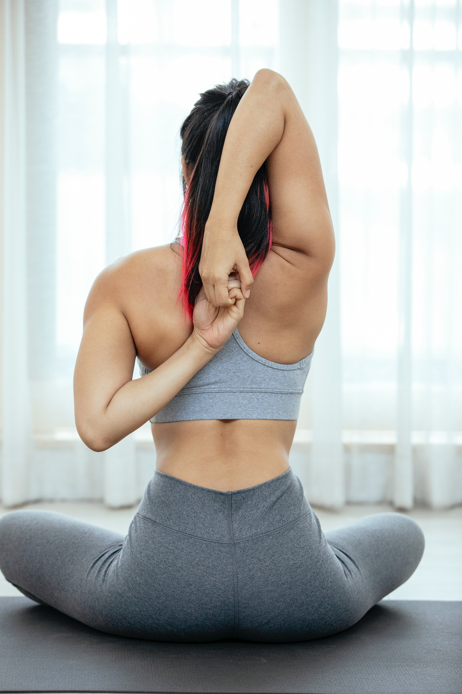

The Health Benefits of Yoga

Yoga poses work by stretching your muscles. They can help you move better and feel less stiff or tired.

Some styles of yoga, such as ashtanga and power yoga, are very physical. Practicing one of these styles will help you improve muscle tone.

When you're stronger and more flexible, your posture improves. With a stronger core, you're more likely to sit and stand ″tall.″

You may feel less stressed and more relaxed after doing some yoga.